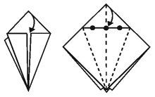
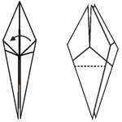

WHAT IS SPECIAL ABOUT THEM?
According to Japanese legend,if you fold 1,000 origami cranes you will be granted one wish.
1. Using a square piece of paper, fold the paper in half to form a triangle. If using a
piece of paper colored on one side only, begin with the colored side facing up. Unfold
the paper and repeat to make folds seen in the image above.
2. Flip the paper so the colored side is facing down and fold the paper in half forming a
rectangle. Unfold the paper and repeat to make folds seen in the image above.
3. Now fold along all four creases at once to form a square with the open end facing you.
4. Fold two edges in, to form a kite-shape on top. Repeat on other side.
5. Fold the point down and crease above the other two folds. Flip the paper and repeat fold.
Undo the folds you made in steps 4 and 5.
6. Pull the bottom corner (top layer only) up above the top corner. Fold along the creases you
made in steps 4 and 5. Repeat on the other side.
7. Fold two edges in to form a kite-shape. Repeat on the other side.
8. Fold the top layer (right side) to lay on top of the left side like turning the page of a book.
Flip over and repeat on the other side.
9. Fold up the top layer as far as you can on each side.
10. Fold the top layer (right side) to lay on top of the left side like turning the page of a book.
Flip over and repeat on the other side.
11. Fold down wings.

12. Bend down the head to give the crane a long beak. Pull the wings straight out from the body so that
the body inflates.
my source: Internatioanl crane foundation